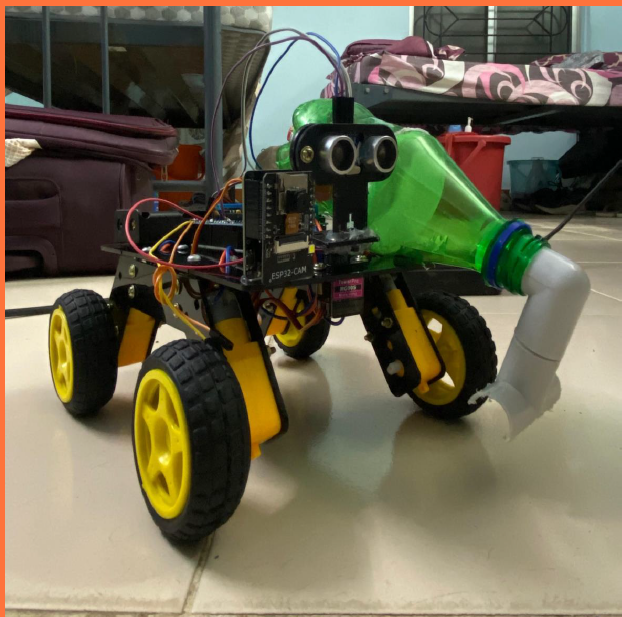

Team B1 Members
- Yeturu Hemesh : CB.SC.U4AIE23166
- Joel John : CB.SC.U4AIE23131
- Abhishek Sankaramani : CB.SC.U4AIE23107
- Adarsh P : CB.SC.U4AIE23109
Project Overview
The project is about developing an Automated Vacuum Cleaner Robot that combines advanced robotics and mathematics for efficient autonomous cleaning. The robot uses Fourier and Discrete Cosine Transforms (DCT) for image processing, enabling it to distinguish between dust and obstacles. ADMM is applied for image denoising, while compressed sensing helps reduce the number of samples needed for image processing, saving computational resources.
Machine learning (logistic regression) is employed for obstacle classification, and Stochastic Gradient Descent is used to train the model. The vacuum's navigation relies on the A* algorithm for path planning and graph Laplacians for complete area coverage. Future enhancements could involve deep learning for object recognition, SLAM for environmental mapping, and reinforcement learning for adaptive cleaning strategies.
Literature Review
| Phase | Representative Works | Main Contributions |
|---|---|---|
| 2000–2010 Early Developments |
• iRobot Roomba (2002) • Thrun et al. (2005) Probabilistic SLAM |
• First commercial random-coverage cleaning robot • Introduction of probabilistic SLAM for indoor mapping |
| 2010–2015 Mapping & Navigation Enhancements |
• Wang et al. (2012) Grid-based SLAM • Huang et al. (2013) Topological SLAM • Kim (2014) Differential-drive + PID control |
• Structured environment representation • Improved real-time control via ultrasonic feedback |
| 2015–2020 Integration of AI & Vision |
• Furukawa et al. (2016) Monocular/depth vision • Ma et al. (2017) CNN-based dirt detection • Xiaomi/Neato consumer models (LiDAR + VIO) |
• Vision-based obstacle detection for robust navigation • Selective cleaning via deep learning • Real-time localization with LiDAR & visual-inertial odometry |
Methodology
1. Image Preprocessing & Feature Extraction
Captured images are converted to the frequency domain to highlight key features:
C(u,v) = α(u)α(v) ∑x,y f(x,y) cos(...)cos(...)
2. Image Denoising using ADMM
We solve an L1-regularized optimization for noise removal:
Lρ(x,z,u) = ½‖x–b‖² + λ‖z‖1 + uᵀ(Dx–z) + (ρ/2)‖Dx–z‖²
3. Compressed Sensing
Reduce measurements while preserving features:
min‖α‖1 s.t. y = ΦΨα
4. Object Classification with Logistic Regression
Binary model to distinguish dust vs. obstacles:
J(θ)=–(1/m)∑[y logσ(θᵀx)+(1–y)log(1–σ(θᵀx))]
5. Path Planning using A* Algorithm
Compute shortest path with heuristic guidance:
h(n)=|xgoal–x|+|ygoal–y|
6. Graph Laplacians for Area Coverage
Spectral methods to plan sweeping routes:
7. Embedded Control & Implementation
Differential-drive kinematics with PID:
w=(R/B)(ωR–ωL)
Hardware Architecture
- Arduino Uno
- ESP32-CAM
- Ultrasonic Sensor on Servo
- Motor Shield
- DC Motors and Wheels
- Battery Pack 12V
Software Architecture
Module Breakdown
Image Processing Module (PC Side)
The ESP32-CAM streams live video to the PC, where Python captures the feed and processes it. The image is converted to grayscale and denoised using ADMM with DCT. The processed image is resized to 64x64 and flattened into a feature vector for classification.
Logistic Regression Classification Module (PC Side)
The logistic regression model is trained using labeled dust and obstacle images. The model is stored in a .pkl file and used for real-time classification. It outputs commands (either move forward or avoid) based on the classification result.
Motor Control and Command Communication (PC & Arduino)
The PC sends movement commands ('F' for forward, 'A' for avoid) via serial communication to the Arduino. The Arduino interprets these commands and controls the motors using a Motor Driver (L298N). The Arduino adjusts robot movement based on sensor inputs.
Obstacle Detection and Navigation
The Ultrasonic Sensor and Servo Motor detect obstacles and scan the environment in real-time. Python constructs a grid map, marking obstacles and determining the robot's path. The A* algorithm calculates the optimal route while avoiding obstacles.
Path Planning Module
A grid map is maintained in Python, and the A* algorithm computes the best path to the target. The robot continuously updates the grid map with new obstacles detected by the Ultrasonic Sensor and ESP32-CAM. If new obstacles are found, the robot recalculates its path.
Communication and Power
The ESP32-CAM streams video to the PC via Wi-Fi. Serial communication (9600 baud) is used between the PC and Arduino for motor commands and sensor data exchange. Power is supplied via a USB or battery pack to both ESP32-CAM and Arduino. .
+--------------------------------------+
| Smart Vacuum |
| Cleaner Robot System |
+--------------------------------------+
| |
| +----------------------------+ |
| | Image Processing | |<----(Wi-Fi)---> ESP32-CAM
| | (PC Side) | |
| | - Video Capture (OpenCV) | |
| | - ADMM Denoising (Python) | |
| | - Feature Extraction | |
| | - Logistic Regression | |
| +----------------------------+ |
| |
| +----------------------------+ |
| | Obstacle Detection & | |
| | Path Planning (Python) | |
| | - A* Pathfinding | |
| | - Grid Mapping | |
| | - Obstacle Update | |
| +----------------------------+ |
| |
| +----------------------------+ |
| | Motor & Sensor Control | |
| | (Arduino Uno) | |
| | - Serial Communication | |
| | - Motor Control (L298N) | |
| | - Ultrasonic Sensor Control | |
| +----------------------------+ |
| |
+--------------------------------------+
Arduino Integration
The Arduino Uno handles low-level motor and sensor control, interfacing with the PC for navigation commands.
- Motor & Sensor Control: Drives DC motors via L298N driver and reads ultrasonic sensor data to detect obstacles.
- Serial Communication (9600 baud): Receives 'F' (forward) and 'A' (avoid) commands from the PC, sending real-time feedback.
- Control Logic:
- 'F': Both motors spin forward.
- 'A': Robot reverses then turns to avoid obstacle.
- Servo-mounted Ultrasonic Sensor: Rotates to scan environment; Arduino filters distance readings for reliable detection.
- Real-time Feedback Loop: Continuously updates motor actions based on path planner and obstacle data.
Demo
This section showcases our robot’s simulation environments and hardware demonstrations.
Simulation Videos
Hardware Setup Image
Hardware Demo Videos
Conclusion
This project successfully demonstrates the design and implementation of a cost-effective Autonomous Vacuum Cleaner Robot that integrates vision-based perception, mathematical modeling, and efficient path planning. By utilizing a single camera combined with Fourier and DCT-based image analysis, the system accurately detects and distinguishes between floor textures, dust particles, and obstacles. Advanced optimization techniques like ADMM and compressed sensing significantly enhance noise reduction and image clarity for improved feature extraction.
Machine learning models, particularly logistic regression, enable real-time classification of obstacles, while A* and Dijkstra’s algorithms ensure optimal route computation for complete area coverage. The system operates reliably using differential drive kinematics controlled via PID, and the entire functionality is realized on low-cost embedded hardware platforms like Arduino and Raspberry Pi.
References
- Burgard, W., Fox, D., & Thrun, S. (1997). Active mobile robot localization. Robotics, pp. 1346–1352.
- Burgard, W., Bennewitz, M., & Stachniss, C. (2017). Learning spatial representations for efficient robot navigation. Robotics and Autonomous Systems, 87, 162–176.
- Jähne, B., & Haussecker, H. (2018). Advancements in machine vision for robotic inspection and measurement. Machine Vision and Applications, 29(5), 789–809.
- Demiris, Y., & Schiele, B. (2019). Development of vision-based artificial agents for autonomous interaction. IEEE Transactions on Robotics, 35(3), 617–634.
- LaValle, S. M. (2020). Modern approaches to robot motion planning. In Springer Tracts in Advanced Robotics (Vol. 123). Springer.
- Xu, Z., Zhan, X., Xiu, Y., Suzuki, C., & Shimada, K. (2023). Onboard dynamic-object detection and tracking for autonomous robot navigation with RGB-D camera. IEEE Robotics and Automation Letters.